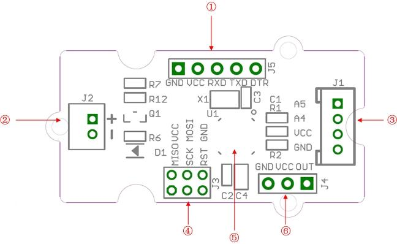

Grove - Mini Fan
The Grove - Mini Fan module is a DC motor driver based on the AVR Atmega168 microcontroller. The module also provides a breakout through which you can change the microcontroller code. For example, the code can be changed so that the module can be used to drive a servomotor. By default, the module is set up to run the DC motor that is included in your mixer pack. The soft-leaved fan also included in the pack can be attached to the motor to make a fun project with kids. Being soft-leaved, the fan is completely safe and there is no chance of any injury even if it is moving at a high speed.
Features
- User friendly output module that triggers a DC motor into operation based on signal received from an input sensor or switching module
- Used in conjunction with DC motor included with the pack
- JST 2.0 Interface used to connect to the motor
- DC motor comes with a colorful soft-leaved fan accessory (as shown in the picture)
- On-board micro-controller can be re-programmed to change module operation
- Micro-controller runs Arduino Compatible code
- Change code to drive Servo motors instead of DC motors
- Uses Standard 4-pin Grove Cables to connect to other Grove modules
- Note:for latest version(v1.1), the output voltage for motor is updated to 3.3 volts.
Interface Function

- ① UartSBee Interface: Use this interface to change the microcontroller code. Use a UartSBee module to connect to the microcontroller using the Uart interface.
- ② JST 2.0 Interface: Used to connect to a 3.3 volts DC motor(only 3.3 volts)
- ③ Grove Interface
- ④ ICSP Interface
- ⑤ Atmega168 Microcontroller
- ⑥ Servo Interface
Usage
Follow these steps to build a sample circuit using this module:
- First connect the DC motor to the Grove - Mini Fan module using the JST2.0 two-wire interface.
- Connect the Mini Fan module to the output side of your circuit (to the right of the power module). On the input side of the circuit, you may use a range of sensor based input modules (Grove - Light Sensor, Grove - Sound Sensor, Grove - Button or Grove - Slide Potentiometer).
- Power up the circuit.
- The DC motor starts to rotate when the input module supplies a trigger:
- If using with a momentary switch like the one on the Grove - Button module, simply press the button to turn ON the motor.
- If using with a Grove - Slide Potentiometer, move the slider from the GND position to VCC and see the speed of the motor increase as the supplied voltage increases. Attach the soft-leaved fan and you have a variable speed personal fan that you can run at whichever speed you desire to fight the heat!
- If using with a Grove - Light Sensor connected directly to the input side of the circuit, you should see that the motor runs in bright light and stops in the dark:
If you want the motor to run only in the dark, add a Grove - NOT module between the light sensor and the power module.
- If using with a Grove - Sound Sensor, you should see that the motor runs on detecting sound. Again, if you want to reverse the function, or in other words, if you want that the motor should be ON at all times except when there is a sound, add a Grove - NOT module between the sound sensor and the power module.
You can use either the Grove - USB Power module or the Grove - DC Jack Power module for the Grove circuit.
For building a circuit that controls a servomotor using a potentiometer, follow the steps below:
- Open the code directly to the path: \libraries\Servo\examples\Knob
- Upload your code to the on-board MCU. Ensure that you select the correct board type and COM port when uploading.
- Now you should be able to control your servomotor with a potentiometer
Availability
This Grove module is available as part of the following Grove Kit Series:
Alternatively, it can be bought stand-alone at the Seeed Studio Bazaar.
Resources
Copyright (c) 2008-2016 Seeed Development Limited (
www.seeedstudio.com /
www.seeed.cc)
This static html page was created from http://www.seeedstudio.com/wiki